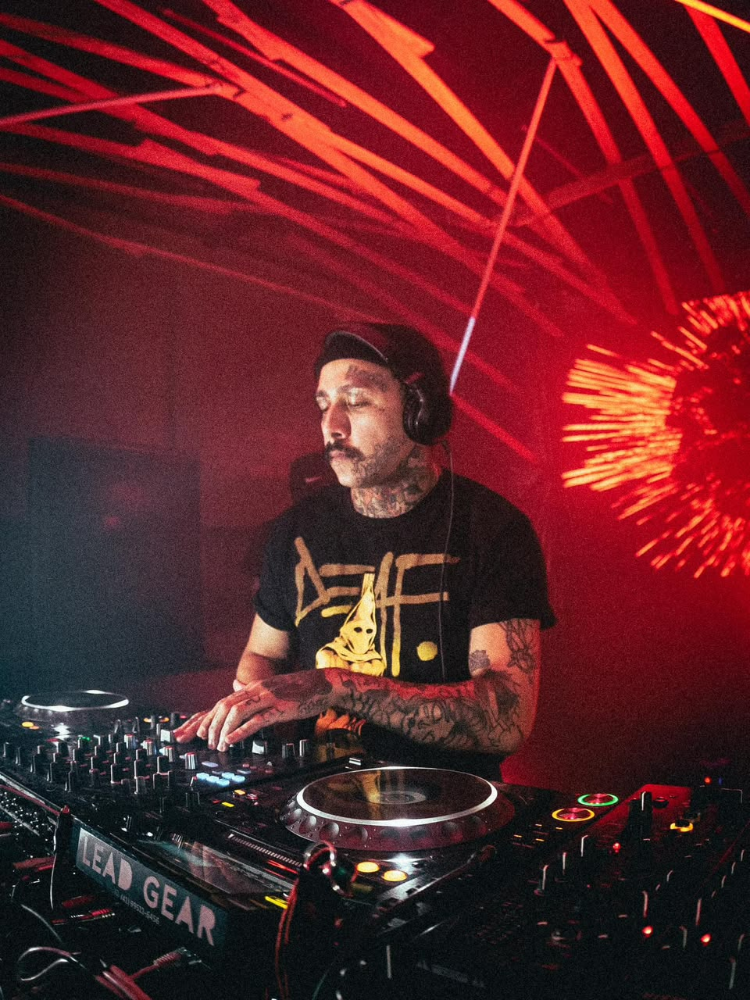
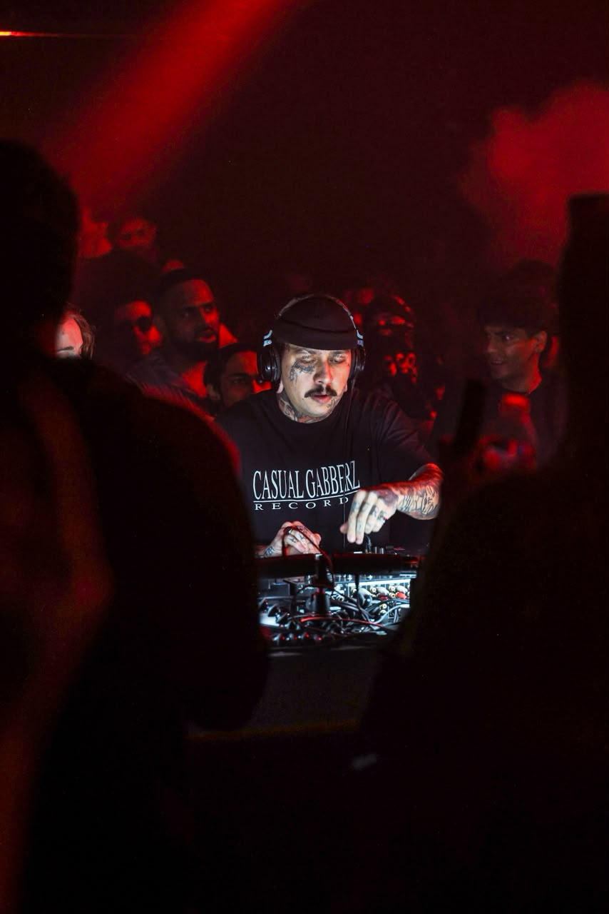
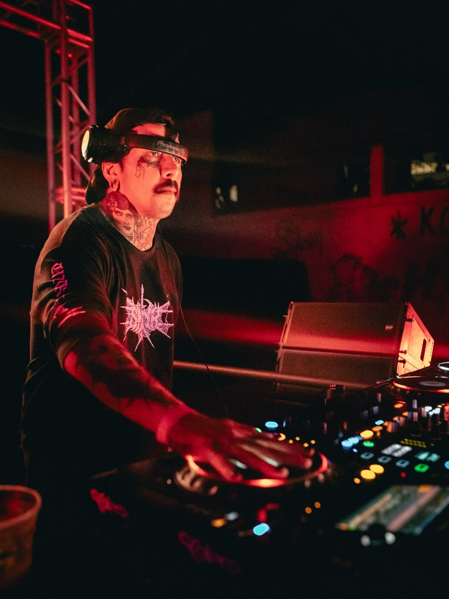
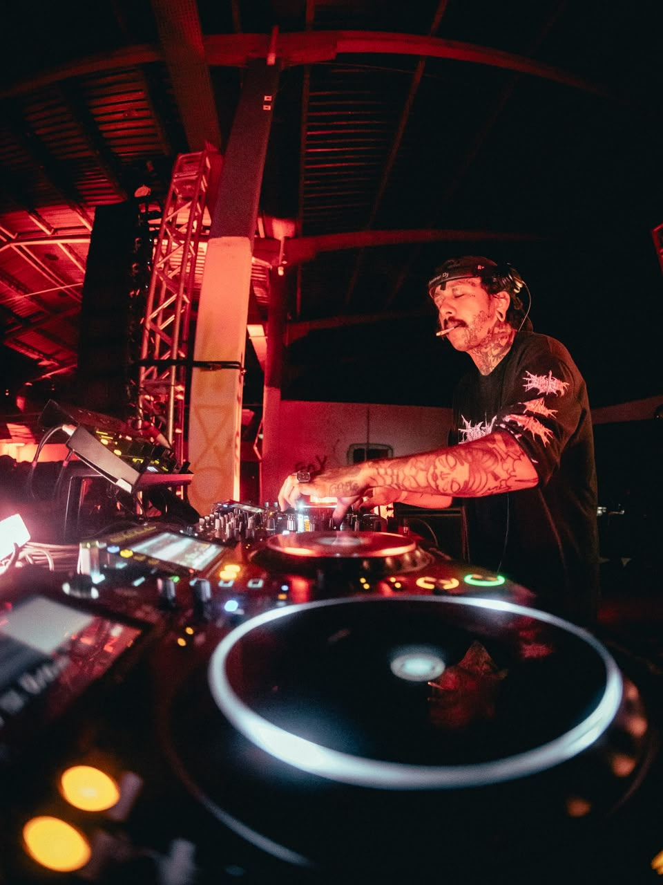
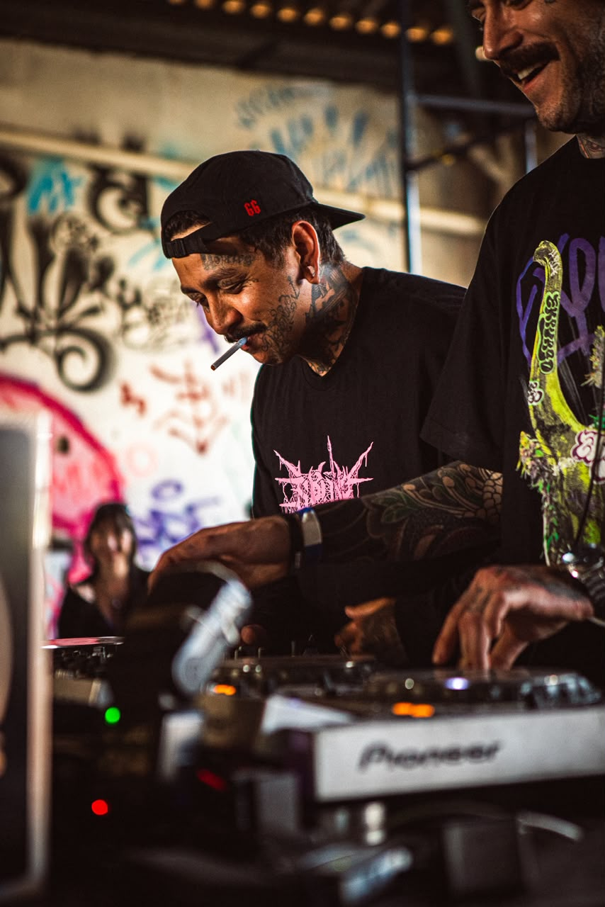

NØLOVE666
Is an artist from Curitiba, Brazil, currently based in London. Rather than following a purist approach, he draws from a wide range of styles to shape his sound.
Since the emergence of the NØLOVE666 project, he has been active across underground events in Curitiba and São Paulo, as well as other cities across Brazil. He has shared lineups with artists such as Analect, Tegron, Jensen Interceptor, Tiago Santos, Silenzo, D. Carbone and Luiz Fribs.
He made his London debut in December 2025 at TECHNODROMEUK and was one of the winners of the XVIILABEL contest.
His interpretation of electronic music is strongly influenced by hardcore, deathcore and other musical styles. Passionate about high BPMs, this energy — combined with his love for intense and distinctive mixing — has become one of the defining characteristics of his sets.
His performances are known for frenetic percussion, fast and precise transitions, and a relentless approach to mixing, allowing him to channel his personality, experiences and emotions directly into the dancefloor.
NØLOVE666 is currently based in London.
Fotos




